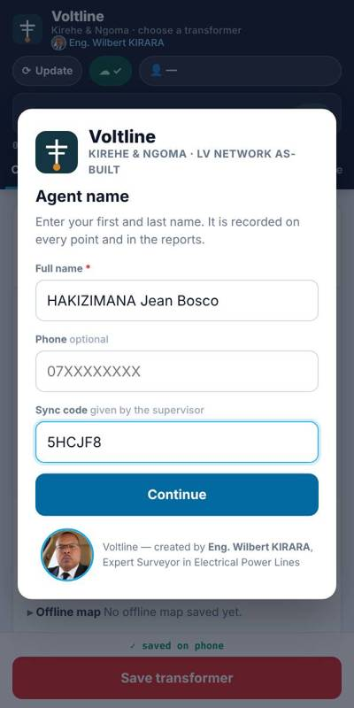
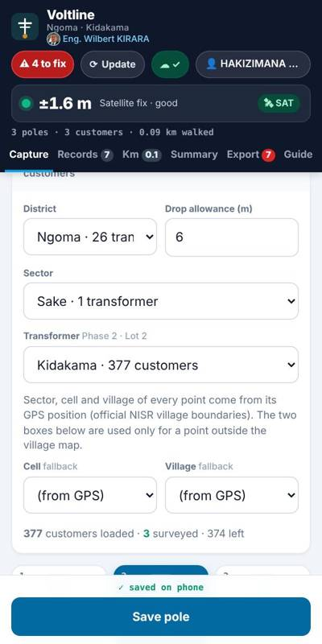
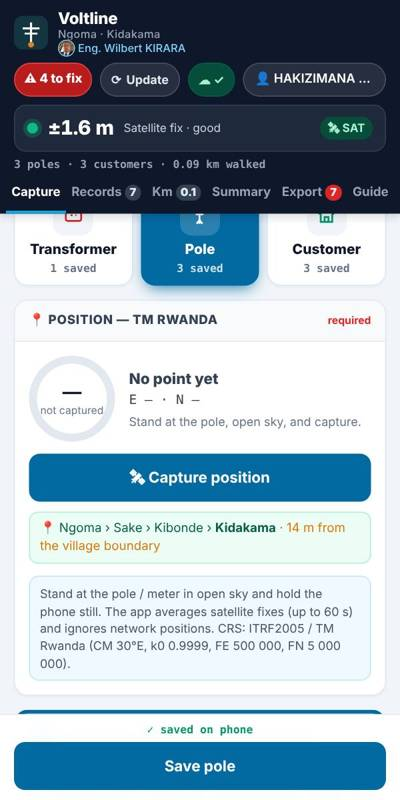
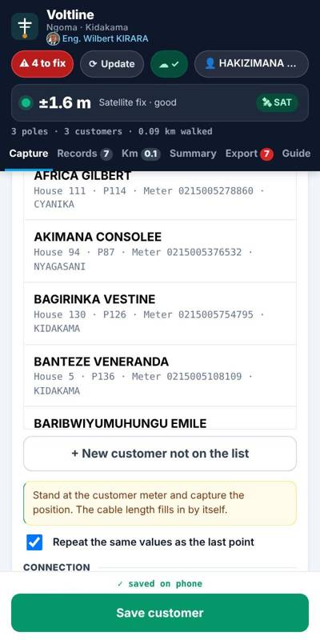
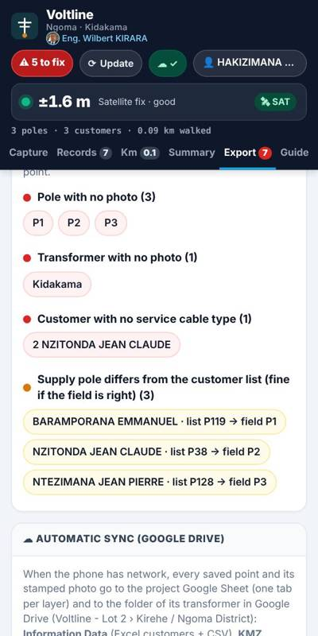
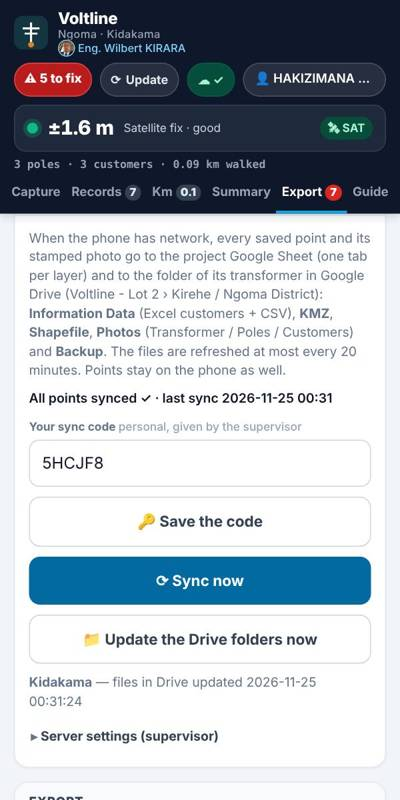

1Buri gitondo, mbere yo gutangira
- Fungura Voltline ufite internet, ukande ⟳ Update hejuru. Ubona verisiyo nshya ako kanya.
- Reba ko igicu kiri mu cyatsi ☁ ✓: bivuze ko ibyo wakoze ejo byose byageze kuri Drive.
- Telefoni ifite umuriro uhagije, na Location (GPS) ifunguye.
2Kwinjira (rimwe gusa)
- Full name: andika amazina yawe yose.
- Sync code: andika code wahawe na supervisor. Ni iyawe wenyine: ntuyihe undi muntu.
- Kanda Continue.

3Guhitamo transformateur
- Muri ⚙ Transformer zone: hitamo District, hanyuma Sector, hanyuma Transformer.
- Urutonde rw'abakiriya b'iyo transfo ruhita ruza (urugero: Kidakama · 377 customers).
- Transfo wahisemo ikoreshwa hose kugeza uyihinduye. Iyo uhinduye transfo, ibyo wari ugezeho ntibisibangana.

4GPS: aho ufata position
- Hejuru hagaragara uko GPS imeze. Icyatsi “Satellite fix · good” na ±1 kugeza ±5 m = byiza.
- “NET” cyangwa umutuku = ntibikoreshwa. Tegereza, cyangwa ujye ahabona ikirere neza (kure y'amazu n'ibiti).
- Hagarara ku ipoto (cyangwa kuri konteri y'umukiriya), ufate telefoni idanyeganyega, ukande 🛰 Capture position, utegereze ko irangiza.
Ntugashyire ipoto cyangwa umukiriya ku ikarita n'intoki (Move points) keretse ari ngombwa. Ahenshi amakosa akomeye ava aho.
5Transformateur n'amapoto
Transformateur (rimwe kuri buri transfo): kanda Transformer, fata position iruhande rwayo, fata ifoto (itegetswe), kanda Save transformer.
Ipoto: kanda Pole, hanyuma:
- Pole number: P1, P2, P3… (app igusaba nimero ikurikira).
- From pole: ipoto iyibanziriza. Ku ipoto ya mbere, ni transfo.
- Conductor irategetswe: câble igera kuri iyo poto (urugero 3x50+54.6mm2).
- Assembly, hanyuma ifoto (irategetswe).
- Hagarara ku ipoto, kanda 🛰 Capture position, hanyuma Save pole.

6Abakiriya
- Kanda Customer. Shakisha umukiriya mu rutonde: izina, n° y'inzu, konteri, ID cyangwa telefoni.
- ✓ imbere y'izina = uwo mukiriya yamaze kwandikwa. Ntukamwandike kabiri.
- Konteri imwe = umukiriya umwe. Niba konteri yamaze kwandikwa, app irabyanga ikakwereka aho yanditse. Umuntu umwe ashobora kugira konteri nyinshi.
- Umukiriya utari ku rutonde: kanda + New customer not on the list.
- Supply pole: ipoto imugaburira (iyo câble ye iturukaho).
- Hagarara kuri konteri y'umukiriya (si ku ipoto!), kanda 🛰 Capture position. Uburebure bwa câble bwibara bwonyine.
- Service cable irategetswe (2x6 mm2 Cu, 2x4 mm2 Cu…).
- Nta konteri ihari? App irakubaza kubyemeza, ikandika “No meter”.
- Kanda Save customer.
Iyo câble irengeje 50 m, app ikwereka ipoto iri hafi y'umukiriya (urugero “P2 iri kuri 10 m”). Kanda OK niba ari yo imugaburira koko.

7Amakosa: akamenyetso ⚠ hejuru
- ⚠ 3 to fix = amakosa 3 agomba gukosorwa.
- ⚠ 2 to check = ibintu 2 byo kugenzura.
- Kanda kuri ⚠ : urutonde rw'amakosa rurafunguka. Kanda ku izina: ipoto cyangwa umukiriya arafunguka. Kosora, ukande Update point.
- Mbere yo gutaha, ⚠ igomba kuba yavuyeho cyangwa iri hasi cyane.

8Kohereza kuri Google Drive
- Iyo ufite internet, ibyo wanditse n'amafoto byoherezwa byonyine.
- ☁ ✓ = byose byagezeyo. ☁ 5 = 5 biracyategereje internet. ☁ ! = hari ikibazo: jya muri Export usome ubutumwa.
- Ushobora gukanda ⟳ Sync now kugira ngo byoherezwe ako kanya.
- Buri mugoroba: Export → Send file for the supervisor, uyohereze kuri WhatsApp.

9Amakosa akunze kugaragara: yirinde
- Kwandika umukiriya umwe kabiri, ku mapoto abiri atandukanye.
- Guhuza umukiriya n'ipoto ya kure, kandi hari indi iri hafi ye.
- Gufata position y'umukiriya uhagaze ku ipoto aho guhagarara kuri konteri ye.
- Gushyira ipoto ku ikarita n'intoki, kure y'aho iri koko.
- Kwibagirwa conductor ku ipoto, cyangwa service cable ku mukiriya.
10Iyo hari ikibazo
- App ntiyivugurura: funga Voltline burundu (kanda ||| hanyuma uyikureho), uyifungure ufite internet. Bitakunze, fungura iyi link muri browser washyiriyemo app (Chrome cyangwa Samsung Internet): wilbertkirara-ops.github.io/volt/repair.html. Amakuru yawe ntasibangana.
- “sync code not valid”: reba ko wanditse code neza, cyangwa ubaze supervisor.
Ntuzigere usiba app (uninstall) cyangwa ngo ukande “Clear data”: ibyo utarohereza byahita bisibangana burundu.
Ikindi kibazo cyose: hamagara supervisor.